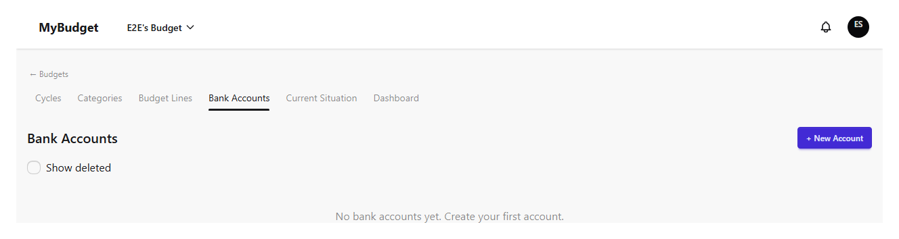
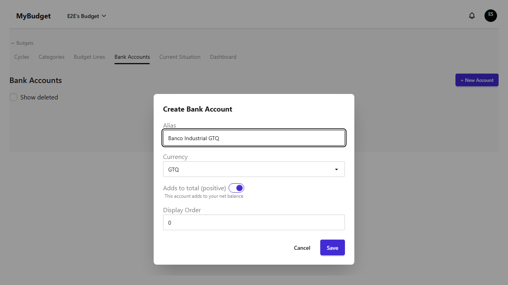
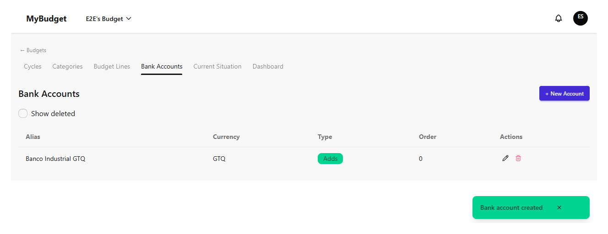
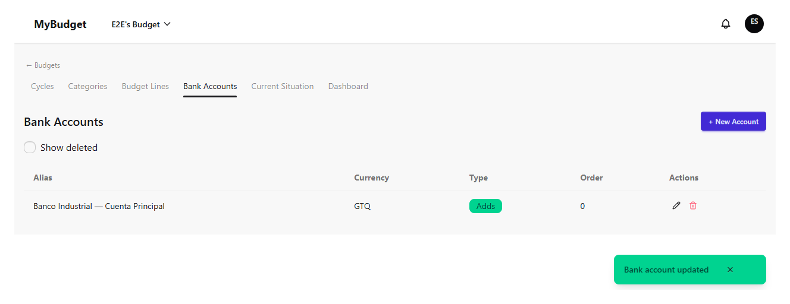
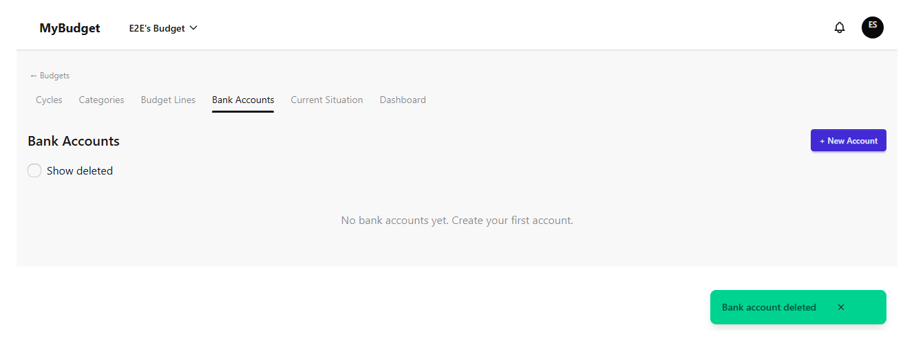
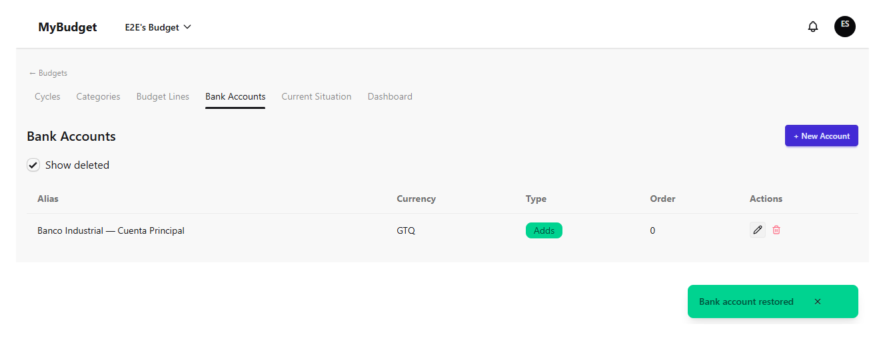

Cuentas bancarias
Las cuentas bancarias son la fuente de los saldos que registrás en el capítulo Situación actual, y definen si el total de un corte sube o baja. Este capítulo cubre la lista de cuentas, crear y editar una cuenta, y eliminar (suave) y restaurar una cuenta.
La lista de cuentas
Cada cuenta muestra su alias, moneda, tipo y orden de visualización. El tipo es Suma — la cuenta contribuye positivamente al total del corte, para una cuenta corriente o de ahorro — o Resta, para un pasivo como el saldo de una tarjeta de crédito. El orden de visualización controla el orden de las filas en todos lados donde aparece la cuenta, incluido el formulario de Situación actual. Un presupuesto sin cuentas todavía muestra un mensaje de estado vacío en lugar de una tabla vacía.

Crear una cuenta
Solo los administradores y el propietario ven el botón "Nueva cuenta". El formulario de creación pide un alias, una moneda y si la cuenta suma o resta del total; el toggle de suma/resta viene activado en "suma" por defecto. El alias debe ser único dentro del presupuesto — reutilizar uno se rechaza con un mensaje dedicado ("ya existe una cuenta con este alias") en lugar de uno genérico de error al guardar.


Editar una cuenta
Editar te permite renombrar el alias, cambiar el tipo suma/resta, o cambiar el orden de visualización. La moneda queda bloqueada una vez creada la cuenta — no se puede cambiar después, solo reemplazarse eliminando la cuenta y creando una nueva en la moneda deseada.

Eliminar y restaurar una cuenta
Eliminar una cuenta es una eliminación suave: la cuenta desaparece de la lista por defecto pero su historial se conserva. Un diálogo de confirmación nombra la cuenta por su alias antes de hacer nada. Para volver a encontrar una cuenta eliminada, activá "Mostrar eliminadas" arriba de la tabla — las filas eliminadas aparecen atenuadas con una etiqueta "eliminada" y una acción Restaurar en lugar de editar/eliminar. Restaurar reinstala la cuenta tal como estaba, incluido su orden de visualización.

